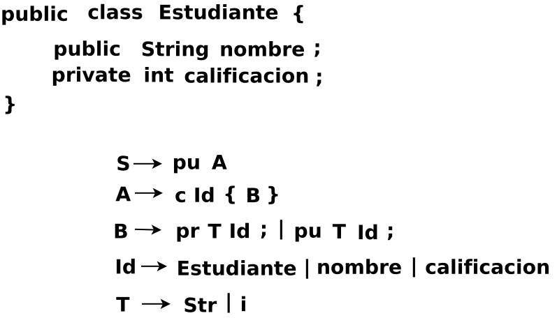

Cuestionario del segundo parcial
Instrucciones. Lea con cuidado cada una de las preguntas. Contestar en una hoja de word cada una de las preguntas. Para después subir el archivo de word o puede estar en formato PDF, en el repositorio de classroom para Compiladores correspondiente al grupo 3CM13.
No comprimir los archivos, por favor.
Pregunta 1 Ponderación: 1 punto
Pregunta. Determinar si la siguiente gramática es LL(1):
Pizarrón, archivo dia: SNCompiladores/C2P1mayo2023.dia

Pregunta 2 Ponderación: 2 puntos
Pregunta. Eliminar la recursividad izquierda de la siguiente producción:
B → B T Id; | T Id;
Pregunta 3 Ponderación: 2 puntos
Pregunta. Obtener la gramática libre de contexto del siguiente código:
public String getNombre() {return nombre;}
Pregunta 4 Ponderación: 5 puntos
Pregunta. Analizar el código que se presenta por medio de un analizador sintático de descenso recursivo: